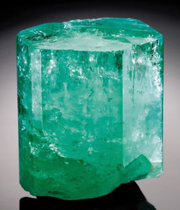
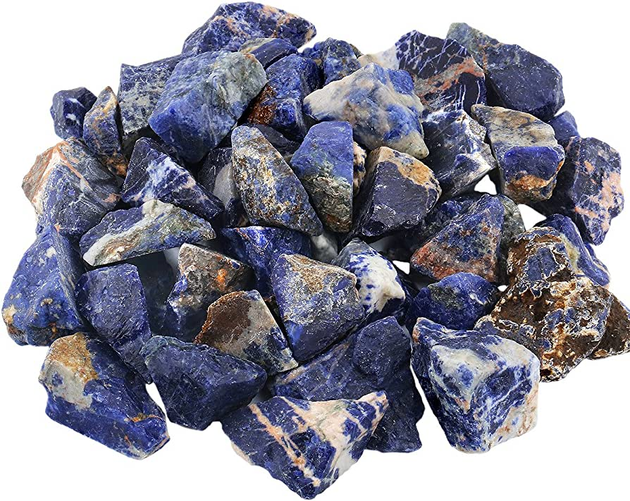
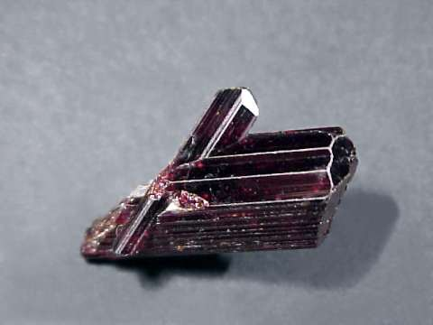
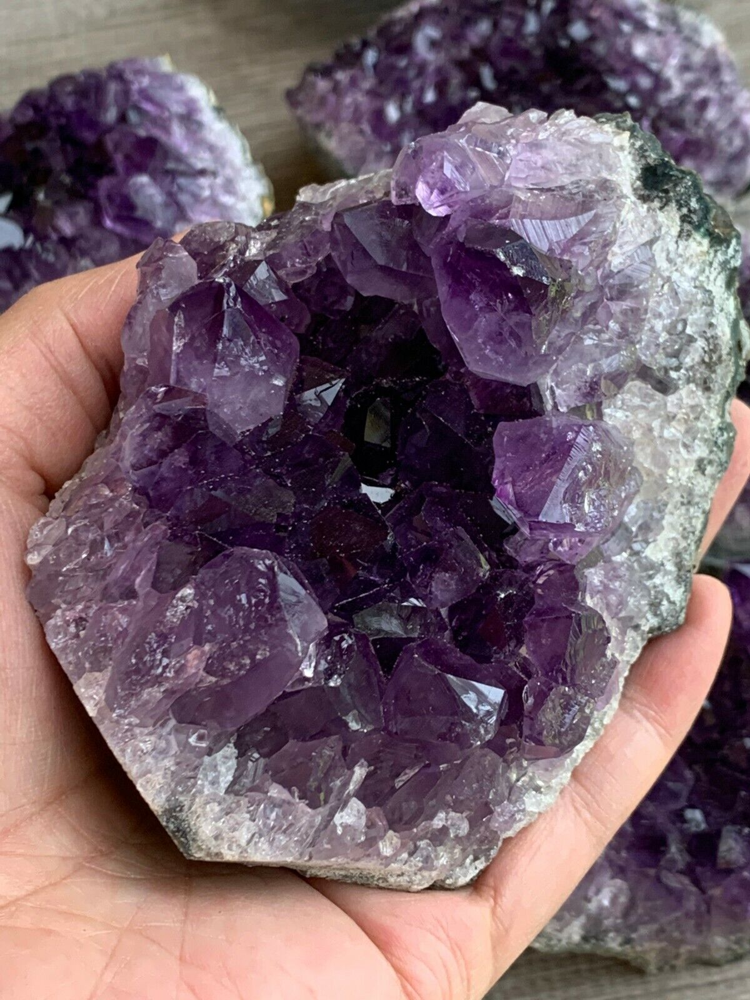

New here?

New to rockhounding and don't know where to start? Not to worry, we will show you the ropes. Click below to head over to our "Getting Started" guide
Getting StartedRocks & Minerals In North Carolina


North Carolina has some fantastic rockhounding opportunities, with unique finds like the famous emeralds and hiddenite from the Hiddenite Gems area, as well as the beautiful rhodolite garnet and ruby specimens found in the Cowee Valley. The state is also rich in minerals, including kyanite, quartz, and corundum, making it an exciting destination for rockhounding enthusiasts.
Sponsored Dig Site

Own a digsite you would like to advertize in North Carolina? Contact us for more information about being our sponsor of the month! Email sponsors@rockhounding.org for more information.
Dig With UsPopular Rocks In North Carolina
-

Emerald
North Carolina is known for its beautiful emeralds, particularly in the Hiddenite area, where the largest emerald in North America was discovered.
Read More -

Sodalite
Sodalite, a mesmerizing blue mineral, can be found in North Carolina's Spruce Pine district, where it is associated with quartz and feldspar veins.
Read More -
 Gold Ore
Gold OreGold was first discovered in the United States in North Carolina, and the state's Reed Gold Mine was once the most productive gold mine in the country.
Read More -
 Ancient Marine Fossils
Ancient Marine FossilsAncient marine fossils, such as trilobites and crinoids, can be found in limestone deposits in the Appalachian region of North Carolina.
Read More -
 Garnet
GarnetVarious types of garnet, ranging from deep red to vibrant green, can be found throughout North Carolina, particularly in the Blue Ridge Mountains and the Piedmont region.
Read More -

Rutile
North Carolina is known for its rutile, a striking reddish-brown to black mineral, commonly found in the western part of the state, especially in the Blue Ridge Mountains.
Read More -

Amethyst
Amethyst, a stunning purple variety of quartz, can be found in various locations throughout North Carolina, including the Reel Mine in Lincoln County.
Read More -
 Aquamarine
AquamarineAquamarine, a beautiful blue variety of beryl, has been found in North Carolina's Blue Ridge Mountains, especially around Spruce Pine and other pegmatite-rich areas.
Read More -
 Magnetite
MagnetiteMagnetite, an iron oxide mineral with strong magnetic properties, can be found in various parts of North Carolina, particularly in the Blue Ridge Mountains and the Piedmont region.
Read More
Popular Areas In North Carolina
-
 Emerald Hollow Mine
Emerald Hollow MineLocated in Hiddenite, Emerald Hollow Mine is the only emerald mine in the United States open to the public. Visitors can search for emeralds, aquamarines, garnets, and other valuable gemstones in this famous mine.
Read More -
 Franklin Gem and Mineral Museum
Franklin Gem and Mineral MuseumThe Franklin Gem and Mineral Museum in Franklin offers an extensive collection of gems, minerals, and fossils. Nearby, visitors can explore old mines and search for rubies, sapphires, garnets, and more.
Read More -
 Crabtree Emerald Mine
Crabtree Emerald MineLocated in Little Switzerland, Crabtree Emerald Mine is a popular site for rockhounding enthusiasts. Visitors can search for emeralds, mica, and other minerals in this historic mine.
Read More -
 Spruce Pine Mining District
Spruce Pine Mining DistrictThe Spruce Pine Mining District in western North Carolina is known for its rich deposits of gemstones and minerals. Rockhounds can search for quartz, feldspar, mica, and other minerals in the area.
Read More -
 Mason's Ruby and Sapphire Mine
Mason's Ruby and Sapphire MineLocated in Franklin, Mason's Ruby and Sapphire Mine offers visitors the opportunity to search for valuable gemstones, including rubies, sapphires, and garnets. This mine is known for producing large, high-quality stones.
Read More -
 Aurora Fossil Museum
Aurora Fossil MuseumThe Aurora Fossil Museum in Aurora showcases an impressive collection of fossils, including those from the local phosphate mine. Visitors can dig for their own fossils in the museum's designated digging area.
Read More
Geology of North Carolina
North Carolina's geology is characterized by a mix of ancient crystalline rocks in the Blue Ridge and Piedmont regions and younger sedimentary rocks, including limestone, shale, and sandstone, in the Coastal Plain. The state is home to the Appalachian Mountains, which include the Great Smoky Mountains and the Blue Ridge Mountains.
North Carolina is famous for its mineral resources, including gold and a variety of gemstones such as emeralds, rubies, and sapphires. The state is also known for its diverse fossil deposits, particularly along the coast.
Rockhounding in North Carolina offers a wealth of opportunities, from gemstone hunting in the state's mineral-rich regions to fossil collecting along the coast and exploring the geology of the Appalachian Mountains.